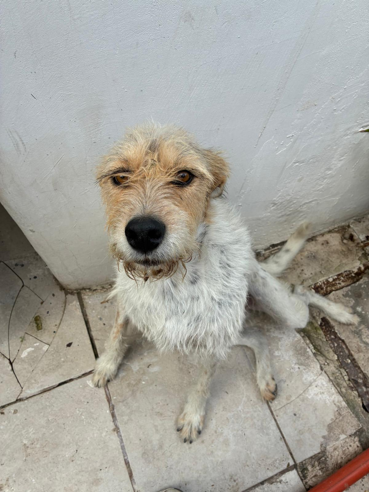

PROCESO · PRÁCTICA
Del entorno
al lienzo.
El proceso creativo comienza con la observación. Personas, objetos, conversaciones y escenas cotidianas se convierten en referencias que posteriormente son reconstruidas mediante la fotografía, la composición y la pintura.
01 · OBSERVAR
Encontrar la escena.
El punto de partida suele aparecer en la vida cotidiana: una persona, una postura, un objeto, un animal o una situación que despierta una imagen posible.
Antes de pensar en la pintura, la escena se observa y se analiza. La intención es reconocer qué elemento tiene fuerza suficiente para sostener una composición.

02 · FOTOGRAFIAR
Construir la referencia.
La fotografía funciona como una herramienta para conservar el momento y comenzar a controlar la composición.
En ocasiones se trabaja con modelos o escenas preparadas para modificar posturas, controlar la dirección de la luz o probar distintas perspectivas antes de llevar la imagen al lienzo.
03 · COMPONER
Decidir qué permanece.
La referencia no se reproduce necesariamente de manera literal. Elementos pueden desplazarse, desaparecer o incorporarse para fortalecer la lectura de la escena.
La luz, el espacio negativo, el contraste y la relación entre las figuras determinan la estructura final de la composición.

04 · PINTAR
Llevar la imagen al lienzo.
La pintura se desarrolla principalmente con acrílico sobre lienzo, construyendo gradualmente valores, color, volumen y profundidad.
La luz y el contraste permiten dirigir la mirada y convertir la oscuridad en una parte activa de la composición.

05 · TERMINAR
Saber cuándo detenerse.
El final de una obra no depende únicamente del detalle. También implica reconocer cuándo la composición, la luz y la atmósfera ya comunican lo necesario.
Cada pintura queda incorporada al archivo como parte de un proceso continuo de observación, práctica y aprendizaje.
CONTINUAR